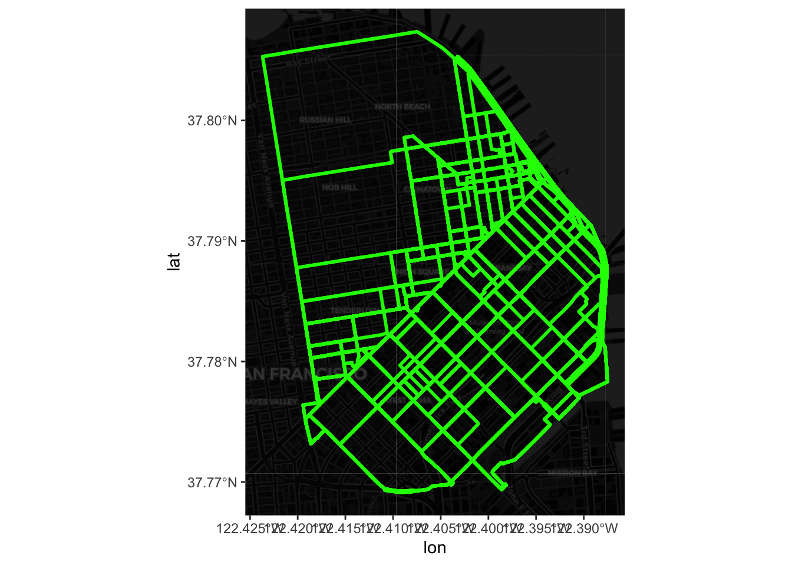

Chapter 5 Flows
This chapter covers spatial interaction flows. Using open data from the city of San Francisco about trips on its bikeshare system, we will estimate spatial interaction models that try to capture and explain the variation in the amount of trips on each given route. After visualizing the dataset, we begin with a very simple model and then build complexity progressively by augmenting it with more information, refined measurements, and better modeling approaches. Throughout the chapter, we explore different ways to grasp the predictive performance of each model. We finish with a prediction example that illustrates how these models can be deployed in a real-world application.
Content is based on the following references, which are great follow-up’s on the topic:
- A. Singleton (2017), an online short course on R for Geographic Data Science and Urban Analytics. In particular, the section on mapping flows is specially relevant here.
- The predictive checks section draws heavily from Gelman and Hill (2006a), in particular Chapters 6 and 7.
5.1 Dependencies
We will rely on the following libraries in this section, all of them included in the book list:
# Spatial Data management
library(rgdal)## Loading required package: sp## rgdal: version: 1.5-23, (SVN revision 1121)
## Geospatial Data Abstraction Library extensions to R successfully loaded
## Loaded GDAL runtime: GDAL 3.0.4, released 2020/01/28
## Path to GDAL shared files: /usr/share/gdal
## GDAL binary built with GEOS: TRUE
## Loaded PROJ runtime: Rel. 6.3.1, February 10th, 2020, [PJ_VERSION: 631]
## Path to PROJ shared files: /usr/share/proj
## Linking to sp version:1.4-5
## To mute warnings of possible GDAL/OSR exportToProj4() degradation,
## use options("rgdal_show_exportToProj4_warnings"="none") before loading rgdal.# Pretty graphics
library(ggplot2)
# Thematic maps
library(tmap)
# Pretty maps
library(ggmap)## Google's Terms of Service: https://cloud.google.com/maps-platform/terms/.## Please cite ggmap if you use it! See citation("ggmap") for details.# Simulation methods
library(arm)## Loading required package: MASS## Loading required package: Matrix## Loading required package: lme4##
## arm (Version 1.11-2, built: 2020-7-27)## Working directory is /home/rstudio/work/Dropbox/Francisco/uol/teaching/envs453/202021/sanIn this chapter we will show a slightly different way of managing spatial data in R. Although most of the functionality will be similar to that seen in previous chapters, we will not rely on the “sf stack” and we will instead show how to read and manipulate data using the more traditional sp stack. Although this approach is being slowly phased out, it is still important to be aware of its existence and its differences with more modern approaches.
Before we start any analysis, let us set the path to the directory where we are working. We can easily do that with setwd(). Please replace in the following line the path to the folder where you have placed this file -and where the sf_bikes folder with the data lives.
setwd('.')5.2 Data
In this note, we will use data from the city of San Francisco representing bike trips on their public bike share system. The original source is the SF Open Data portal (link) and the dataset comprises both the location of each station in the Bay Area as well as information on trips (station of origin to station of destination) undertaken in the system from September 2014 to August 2015 and the following year. Since this note is about modeling and not data preparation, a cleanly reshaped version of the data, together with some additional information, has been created and placed in the sf_bikes folder. The data file is named flows.geojson and, in case you are interested, the (Python) code required to created from the original files in the SF Data Portal is also available on the flows_prep.ipynb notebook [url], also in the same folder.
Let us then directly load the file with all the information necessary:
db <- readOGR('./data/sf_bikes/flows.geojson')## OGR data source with driver: GeoJSON
## Source: "/home/rstudio/work/Dropbox/Francisco/uol/teaching/envs453/202021/san/data/sf_bikes/flows.geojson", layer: "flows"
## with 1722 features
## It has 9 fieldsrownames(db@data) <- db$flow_id
db@data$flow_id <- NULLNote how the interface is slightly different since we are reading a GeoJSON file instead of a shapefile.
The data contains the geometries of the flows, as calculated from the Google Maps API, as well as a series of columns with characteristics of each flow:
head(db@data)## dest orig straight_dist street_dist total_down total_up trips15 trips16
## 39-41 41 39 1452.201 1804.1150 11.205753 4.698162 68 68
## 39-42 42 39 1734.861 2069.1557 10.290236 2.897886 23 29
## 39-45 45 39 1255.349 1747.9928 11.015596 4.593927 83 50
## 39-46 46 39 1323.303 1490.8361 3.511543 5.038044 258 163
## 39-47 47 39 715.689 769.9189 0.000000 3.282495 127 73
## 39-48 48 39 1996.778 2740.1290 11.375186 3.841296 81 56where orig and dest are the station IDs of the origin and destination, street/straight_dist is the distance in metres between stations measured along the street network or as-the-crow-flies, total_down/up is the total downhil and climb in the trip, and tripsXX contains the amount of trips undertaken in the years of study.
5.3 “Seeing” flows
The easiest way to get a quick preview of what the data looks like spatially is to make a simple plot:
plot(db)Figure 4.1: Potential routes
Equally, if we want to visualize a single route, we can simply subset the table. For example, to get the shape of the trip from station 39 to station 48, we can:
one39to48 <- db[ which(
db@data$orig == 39 & db@data$dest == 48
) , ]
plot(one39to48)
Figure 4.2: Trip from station 39 to 48
or, for the most popular route, we can:
most_pop <- db[ which(
db@data$trips15 == max(db@data$trips15)
) , ]
plot(most_pop)Figure 3.1: Most popular trip
These however do not reveal a lot: there is no geographical context (why are there so many routes along the NE?) and no sense of how volumes of bikers are allocated along different routes. Let us fix those two.
The easiest way to bring in geographical context is by overlaying the routes on top of a background map of tiles downloaded from the internet. Let us download this using ggmap:
sf_bb <- c(
left=db@bbox['x', 'min'],
right=db@bbox['x', 'max'],
bottom=db@bbox['y', 'min'],
top=db@bbox['y', 'max']
)
SanFran <- get_stamenmap(
sf_bb,
zoom = 14,
maptype = "toner-lite"
)## Source : http://tile.stamen.com/toner-lite/14/2620/6330.png## Source : http://tile.stamen.com/toner-lite/14/2621/6330.png## Source : http://tile.stamen.com/toner-lite/14/2622/6330.png## Source : http://tile.stamen.com/toner-lite/14/2620/6331.png## Source : http://tile.stamen.com/toner-lite/14/2621/6331.png## Source : http://tile.stamen.com/toner-lite/14/2622/6331.png## Source : http://tile.stamen.com/toner-lite/14/2620/6332.png## Source : http://tile.stamen.com/toner-lite/14/2621/6332.png## Source : http://tile.stamen.com/toner-lite/14/2622/6332.png## Source : http://tile.stamen.com/toner-lite/14/2620/6333.png## Source : http://tile.stamen.com/toner-lite/14/2621/6333.png## Source : http://tile.stamen.com/toner-lite/14/2622/6333.pngand make sure it looks like we intend it to look:
ggmap(SanFran)
Now to combine tiles and routes, we need to pull out the coordinates that make up each line. For the route example above, this would be:
xys1 <- as.data.frame(coordinates(most_pop))Now we can plot the route10 (note we also dim down the background to focus the attention on flows):
ggmap(SanFran, darken=0.5) +
geom_path(
aes(x=X1, y=X2),
data=xys1,
size=1,
color=rgb(0.996078431372549, 0.7019607843137254, 0.03137254901960784),
lineend='round'
)
Now we can plot all of the lines by using a short for loop to build up the table:
# Set up shell data.frame
lines <- data.frame(
lat = numeric(0),
lon = numeric(0),
trips = numeric(0),
id = numeric(0)
)
# Run loop
for(x in 1:nrow(db)){
# Pull out row
r <- db[x, ]
# Extract lon/lat coords
xys <- as.data.frame(coordinates(r))
names(xys) <- c('lon', 'lat')
# Insert trips and id
xys['trips'] <- r@data$trips15
xys['id'] <- x
# Append them to `lines`
lines <- rbind(lines, xys)
}Now we can go on and plot all of them:
ggmap(SanFran, darken=0.75) +
geom_path(
aes(x=lon, y=lat, group=id),
data=lines,
size=0.1,
color=rgb(0.996078431372549, 0.7019607843137254, 0.03137254901960784),
lineend='round'
)
Finally, we can get a sense of the distribution of the flows by associating a color gradient to each flow based on its number of trips:
ggmap(SanFran, darken=0.75) +
geom_path(
aes(x=lon, y=lat, group=id, colour=trips),
data=lines,
size=log1p(lines$trips / max(lines$trips)),
lineend='round'
) +
scale_colour_gradient(
low='grey', high='#07eda0'
) +
theme(
axis.text.x = element_blank(),
axis.text.y = element_blank(),
axis.ticks = element_blank()
)
Note how we transform the size so it’s a proportion of the largest trip and then it is compressed with a logarithm.
5.4 Modelling flows
Now we have an idea of the spatial distribution of flows, we can begin to think about modeling them. The core idea in this section is to fit a model that can capture the particular characteristics of our variable of interest (the volume of trips) using a set of predictors that describe the nature of a given flow. We will start from the simplest model and then progressively build complexity until we get to a satisfying point. Along the way, we will be exploring each model using concepts from Gelman and Hill (2006a) such as predictive performance checks11 (PPC)
Before we start running regressions, let us first standardize the predictors so we can interpret the intercept as the average flow when all the predictors take the average value, and so we can interpret the model coefficients as changes in standard deviation units:
# Scale all the table
db_std <- as.data.frame(scale(db@data))
# Reset trips as we want the original version
db_std$trips15 <- db@data$trips15
db_std$trips16 <- db@data$trips16
# Reset origin and destination station and express them as factors
db_std$orig <- as.factor(db@data$orig)
db_std$dest <- as.factor(db@data$dest)Baseline model
One of the simplest possible models we can fit in this context is a linear model that explains the number of trips as a function of the straight distance between the two stations and total amount of climb and downhill. We will take this as the baseline on which we can further build later:
m1 <- lm('trips15 ~ straight_dist + total_up + total_down', data=db_std)
summary(m1)##
## Call:
## lm(formula = "trips15 ~ straight_dist + total_up + total_down",
## data = db_std)
##
## Residuals:
## Min 1Q Median 3Q Max
## -261.9 -168.3 -102.4 30.8 3527.4
##
## Coefficients:
## Estimate Std. Error t value Pr(>|t|)
## (Intercept) 182.070 8.110 22.451 < 2e-16 ***
## straight_dist 17.906 9.108 1.966 0.0495 *
## total_up -44.100 9.353 -4.715 2.61e-06 ***
## total_down -20.241 9.229 -2.193 0.0284 *
## ---
## Signif. codes: 0 '***' 0.001 '**' 0.01 '*' 0.05 '.' 0.1 ' ' 1
##
## Residual standard error: 336.5 on 1718 degrees of freedom
## Multiple R-squared: 0.02196, Adjusted R-squared: 0.02025
## F-statistic: 12.86 on 3 and 1718 DF, p-value: 2.625e-08To explore how good this model is, we will be comparing the predictions the model makes about the number of trips each flow should have with the actual number of trips. A first approach is to simply plot the distribution of both variables:
plot(
density(m1$fitted.values),
xlim=c(-100, max(db_std$trips15)),
main=''
)
lines(
density(db_std$trips15),
col='red',
main=''
)
legend(
'topright',
c('Predicted', 'Actual'),
col=c('black', 'red'),
lwd=1
)
title(main="Predictive check, point estimates - Baseline model")
The plot makes pretty obvious that our initial model captures very few aspects of the distribution we want to explain. However, we should not get too attached to this plot just yet. What it is showing is the distribution of predicted point estimates from our model. Since our model is not deterministic but inferential, there is a certain degree of uncertainty attached to its predictions, and that is completely absent from this plot.
Generally speaking, a given model has two sources of uncertainty: predictive, and inferential. The former relates to the fact that the equation we fit does not capture all the elements or in the exact form they enter the true data generating process; the latter has to do with the fact that we never get to know the true value of the model parameters only guesses (estimates) subject to error and uncertainty. If you think of our linear model above as
\[ T_{ij} = X_{ij}\beta + \epsilon_{ij} \] where \(T_{ij}\) represents the number of trips undertaken between station \(i\) and \(j\), \(X_{ij}\) is the set of explanatory variables (length, climb, descent, etc.), and \(\epsilon_{ij}\) is an error term assumed to be distributed as a normal distribution \(N(0, \sigma)\); then predictive uncertainty comes from the fact that there are elements to some extent relevant for \(y\) that are not accounted for and thus subsummed into \(\epsilon_{ij}\). Inferential uncertainty comes from the fact that we never get to know \(\beta\) but only an estimate of it which is also subject to uncertainty itself.
Taking these two sources into consideration means that the black line in the plot above represents only the behaviour of our model we expect if the error term is absent (no predictive uncertainty) and the coefficients are the true estimates (no inferential uncertainty). However, this is not necessarily the case as our estimate for the uncertainty of the error term is certainly not zero, and our estimates for each parameter are also subject to a great deal of inferential variability. we do not know to what extent other outcomes would be just as likely. Predictive checking relates to simulating several feasible scenarios under our model and use those to assess uncertainty and to get a better grasp of the quality of our predictions.
Technically speaking, to do this, we need to build a mechanism to obtain a possible draw from our model and then repeat it several times. The first part of those two steps can be elegantly dealt with by writing a short function that takes a given model and a set of predictors, and produces a possible random draw from such model:
generate_draw <- function(m){
# Set up predictors matrix
x <- model.matrix(m)
# Obtain draws of parameters (inferential uncertainty)
sim_bs <- sim(m, 1)
# Predicted value
mu <- x %*% sim_bs@coef[1, ]
# Draw
n <- length(mu)
y_hat <- rnorm(n, mu, sim_bs@sigma[1])
return(y_hat)
}This function takes a model m and the set of covariates x used and returns a random realization of predictions from the model. To get a sense of how this works, we can get and plot a realization of the model, compared to the expected one and the actual values:
new_y <- generate_draw(m1)
plot(
density(m1$fitted.values),
xlim=c(-100, max(db_std$trips15)),
ylim=c(0, max(c(
max(density(m1$fitted.values)$y),
max(density(db_std$trips15)$y)
)
)
),
col='black',
main=''
)
lines(
density(db_std$trips15),
col='red',
main=''
)
lines(
density(new_y),
col='green',
main=''
)
legend(
'topright',
c('Predicted', 'Actual', 'Simulated'),
col=c('black', 'red', 'green'),
lwd=1
)
Once we have this “draw engine,” we can set it to work as many times as we want using a simple for loop. In fact, we can directly plot these lines as compared to the expected one and the trip count:
plot(
density(m1$fitted.values),
xlim=c(-100, max(db_std$trips15)),
ylim=c(0, max(c(
max(density(m1$fitted.values)$y),
max(density(db_std$trips15)$y)
)
)
),
col='white',
main=''
)
# Loop for realizations
for(i in 1:250){
tmp_y <- generate_draw(m1)
lines(density(tmp_y),
col='grey',
lwd=0.1
)
}
#
lines(
density(m1$fitted.values),
col='black',
main=''
)
lines(
density(db_std$trips15),
col='red',
main=''
)
legend(
'topright',
c('Actual', 'Predicted', 'Simulated (n=250)'),
col=c('red', 'black', 'grey'),
lwd=1
)
title(main="Predictive check - Baseline model")
The plot shows there is a significant mismatch between the fitted values, which are much more concentrated around small positive values, and the realizations of our “inferential engine,” which depict a much less concentrated distribution of values. This is likely due to the combination of two different reasons: on the one hand, the accuracy of our estimates may be poor, causing them to jump around a wide range of potential values and hence resulting in very diverse predictions (inferential uncertainty); on the other hand, it may be that the amount of variation we are not able to account for in the model12 is so large that the degree of uncertainty contained in the error term of the model is very large, hence resulting in such a flat predictive distribution.
It is important to keep in mind that the issues discussed in the paragraph above relate only to the uncertainty behind our model, not to the point predictions derived from them, which are a mechanistic result of the minimization of the squared residuals and hence are not subject to probability or inference. That allows them in this case to provide a fitted distribution much more accurate apparently (black line above). However, the lesson to take from this model is that, even if the point predictions (fitted values) are artificially accurate13, our capabilities to infer about the more general underlying process are fairly limited.
Improving the model
The bad news from the previous section is that our initial model is not great at explaining bike trips. The good news is there are several ways in which we can improve this. In this section we will cover three main extensions that exemplify three different routes you can take when enriching and augmenting models in general, and spatial interaction ones in particular14. These three routes are aligned around the following principles:
- Use better approximations to model your dependent variable.
- Recognize the structure of your data.
- Get better predictors.
- Use better approximations to model your dependent variable
Standard OLS regression assumes that the error term and, since the predictors are deterministic, the dependent variable are distributed following a normal (gaussian) distribution. This is usually a good approximation for several phenomena of interest, but maybe not the best one for trips along routes: for one, we know trips cannot be negative, which the normal distribution does not account for15; more subtly, their distribution is not really symmetric but skewed with a very long tail on the right. This is common in variables that represent counts and that is why usually it is more appropriate to fit a model that relies on a distribution different from the normal.
One of the most common distributions for this cases is the Poisson, which can be incorporated through a general linear model (or GLM). The underlying assumption here is that instead of \(T_{ij} \sim N(\mu_{ij}, \sigma)\), our model now follows:
\[ T_{ij} \sim Poisson (\exp^{X_{ij}\beta}) \]
As usual, such a model is easy to run in R:
m2 <- glm(
'trips15 ~ straight_dist + total_up + total_down',
data=db_std,
family=poisson,
)Now let’s see how much better, if any, this approach is. To get a quick overview, we can simply plot the point predictions:
plot(
density(m2$fitted.values),
xlim=c(-100, max(db_std$trips15)),
ylim=c(0, max(c(
max(density(m2$fitted.values)$y),
max(density(db_std$trips15)$y)
)
)
),
col='black',
main=''
)
lines(
density(db_std$trips15),
col='red',
main=''
)
legend(
'topright',
c('Predicted', 'Actual'),
col=c('black', 'red'),
lwd=1
)
title(main="Predictive check, point estimates - Poisson model")To incorporate uncertainty to these predictions, we need to tweak our generate_draw function so it accommodates the fact that our model is not linear anymore.
generate_draw_poi <- function(m){
# Set up predictors matrix
x <- model.matrix(m)
# Obtain draws of parameters (inferential uncertainty)
sim_bs <- sim(m, 1)
# Predicted value
xb <- x %*% sim_bs@coef[1, ]
#xb <- x %*% m$coefficients
# Transform using the link function
mu <- exp(xb)
# Obtain a random realization
y_hat <- rpois(n=length(mu), lambda=mu)
return(y_hat)
}And then we can examine both point predictions an uncertainty around them:
plot(
density(m2$fitted.values),
xlim=c(-100, max(db_std$trips15)),
ylim=c(0, max(c(
max(density(m2$fitted.values)$y),
max(density(db_std$trips15)$y)
)
)
),
col='white',
main=''
)
# Loop for realizations
for(i in 1:250){
tmp_y <- generate_draw_poi(m2)
lines(
density(tmp_y),
col='grey',
lwd=0.1
)
}
#
lines(
density(m2$fitted.values),
col='black',
main=''
)
lines(
density(db_std$trips15),
col='red',
main=''
)
legend(
'topright',
c('Predicted', 'Actual', 'Simulated (n=250)'),
col=c('black', 'red', 'grey'),
lwd=1
)
title(main="Predictive check - Poisson model")Voila! Although the curve is still a bit off, centered too much to the right of the actual data, our predictive simulation leaves the fitted values right in the middle. This speaks to a better fit of the model to the actual distribution othe original data follow.
- Recognize the structure of your data
So far, we’ve treated our dataset as if it was flat (i.e. comprise of fully independent realizations) when in fact it is not. Most crucially, our baseline model does not account for the fact that every observation in the dataset pertains to a trip between two stations. This means that all the trips from or to the same station probably share elements which likely help explain how many trips are undertaken between stations. For example, think of trips to an from a station located in the famous Embarcadero, a popular tourist spot. Every route to and from there probably has more trips due to the popularity of the area and we are currently not acknowledging it in the model.
A simple way to incorporate these effects into the model is through origin and destination fixed effects. This approach shares elements with both spatial fixed effects and multilevel modeling and essentially consists of including a binary variable for every origin and destination station. In mathematical notation, this equates to:
\[ T_{ij} = X_{ij}\beta + \delta_i + \delta_j + \epsilon_{ij} \]
where \(\delta_i\) and \(\delta_j\) are origin and destination station fixed effects16, and the rest is as above. This strategy accounts for all the unobserved heterogeneity associated with the location of the station. Technically speaking, we simply need to introduce orig and dest in the the model:
m3 <- glm(
'trips15 ~ straight_dist + total_up + total_down + orig + dest',
data=db_std,
family=poisson
)And with our new model, we can have a look at how well it does at predicting the overall number of trips17:
plot(
density(m3$fitted.values),
xlim=c(-100, max(db_std$trips15)),
ylim=c(0, max(c(
max(density(m3$fitted.values)$y),
max(density(db_std$trips15)$y)
)
)
),
col='black',
main=''
)
lines(
density(db_std$trips15),
col='red',
main=''
)
legend(
'topright',
c('Predicted', 'Actual'),
col=c('black', 'red'),
lwd=1
)
title(main="Predictive check - Orig/dest FE Poisson model")
That looks significantly better, doesn’t it? In fact, our model now better accounts for the long tail where a few routes take a lot of trips. This is likely because the distribution of trips is far from random across stations and our origin and destination fixed effects do a decent job at accounting for that structure. However our model is still notably underpredicting less popular routes and overpredicting routes with above average number of trips. Maybe we should think about moving beyond a simple linear model.
- Get better predictors
The final extension is, in principle, always available but, in practice, it can be tricky to implement. The core idea is that your baseline model might not have the best measurement of the phenomena you want to account for. In our example, we can think of the distance between stations. So far, we have been including the distance measured “as the crow flies” between stations. Although in some cases this is a good approximation (particularly when distances are long and likely route taken is as close to straight as possible), in some cases like ours, where the street layout and the presence of elevation probably matter more than the actual final distance pedalled, this is not necessarily a safe assumption.
As an exampe of this approach, we can replace the straight distance measurements for more refined ones based on the Google Maps API routes. This is very easy as all we need to do (once the distances have been calculated!) is to swap straight_dist for street_dist:
m4 <- glm(
'trips15 ~ street_dist + total_up + total_down + orig + dest',
data=db_std,
family=poisson
)And we can similarly get a sense of our predictive fitting with:
plot(
density(m4$fitted.values),
xlim=c(-100, max(db_std$trips15)),
ylim=c(0, max(c(
max(density(m4$fitted.values)$y),
max(density(db_std$trips15)$y)
)
)
),
col='black',
main=''
)
lines(
density(db_std$trips15),
col='red',
main=''
)
legend(
'topright',
c('Predicted', 'Actual'),
col=c('black', 'red'),
lwd=1
)
title(main="Predictive check - Orig/dest FE Poisson model")
Hard to tell any noticeable difference, right? To see if there is any, we can have a look at the estimates obtained:
summary(m4)$coefficients['street_dist', ]## Estimate Std. Error z value Pr(>|z|)
## -9.961619e-02 2.688731e-03 -3.704952e+01 1.828096e-300And compare this to that of the straight distances in the previous model:
summary(m3)$coefficients['straight_dist', ]## Estimate Std. Error z value Pr(>|z|)
## -7.820014e-02 2.683052e-03 -2.914596e+01 9.399407e-187As we can see, the differences exist but ar not massive. Let’s use this example to learn how to interpret coefficients in a Poisson model18. Effectively, these estimates can be understood as multiplicative effects. Since our model fits
\[ T_{ij} \sim Poisson (\exp^{X_{ij}\beta}) \]
we need to transform \(\beta\) through an exponential in order to get a sense of the effect of distance on the number of trips. This means that for the street distance, our original estimate is \(\beta_{street} = -0.0996\), but this needs to be translated through the exponential into \(e^{-0.0996} = 0.906\). In other words, since distance is expressed in standard deviations19, we can expect a 10% decrease in the number of trips for an increase of one standard deviation (about 1Km) in the distance between the stations. This can be compared with \(e^{-0.0782} = 0.925\) for the straight distances, or a reduction of about 8% the number of trips for every increase of a standard deviation (about 720m).
5.5 Predicting flows
So far we have put all of our modeling efforts in understanding the model we fit and improving such model so it fits our data as closely as possible. This is essential in any modelling exercise but should be far from a stopping point. Once we’re confident our model is a decent representation of the data generating process, we can start exploiting it. In this section, we will cover one specific case that showcases how a fitted model can help: out-of-sample forecasts.
It is August 2015, and you have just started working as a data scientist for the bikeshare company that runs the San Francisco system. You join them as they’re planning for the next academic year and, in order to plan their operations (re-allocating vans, station maintenance, etc.), they need to get a sense of how many people are going to be pedalling across the city and, crucially, where they are going to be pedalling through. What can you do to help them?
The easiest approach is to say “well, a good guess for how many people will be going between two given stations this coming year is how many went through last year, isn’t it?” This is one prediction approach. However, you could see how, even if the same process governs over both datasets (2015 and 2016), each year will probably have some idiosyncracies and thus looking too closely into one year might not give the best possible answer for the next one. Ideally, you want a good stylized synthesis that captures the bits that stay constant over time and thus can be applied in the future and that ignores those aspects that are too particular to a given point in time. That is the rationale behind using a fitted model to obtain predictions.
However good any theory though, the truth is in the pudding. So, to see if a modeling approach is better at producing forecasts than just using the counts from last year, we can put them to a test. The way this is done when evaluating the predictive performance of a model (as this is called in the literature) relies on two basic steps: a) obtain predictions from a given model and b) compare those to the actual values (in our case, with the counts for 2016 in trips16) and get a sense of “how off” they are. We have essentially covered a) above; for b), there are several measures to use. We will use one of the most common ones, the root mean squared error (RMSE), which roughly gives a sense of the average difference between a predicted vector and the real deal:
\[ RMSE = \sqrt{ \sum_{ij} (\hat{T_{ij}} - T_{ij})^2} \]
where \(\hat{T_{ij}}\) is the predicted amount of trips between stations \(i\) and \(j\). RMSE is straightforward in R and, since we will use it a couple of times, let’s write a short function to make our lives easier:
rmse <- function(t, p){
se <- (t - p)^2
mse <- mean(se)
rmse <- sqrt(mse)
return(rmse)
}where t stands for the vector of true values, and p is the vector of predictions. Let’s give it a spin to make sure it works:
rmse_m4 <- rmse(db_std$trips16, m4$fitted.values)
rmse_m4## [1] 256.2197That means that, on average, predictions in our best model m4 are 256 trips off. Is this good? Bad? Worse? It’s hard to say but, being practical, what we can say is whether this better than our alternative. Let us have a look at the RMSE of the other models as well as that of simply plugging in last year’s counts:20
rmses <- data.frame(
model=c(
'OLS',
'Poisson',
'Poisson + FE',
'Poisson + FE + street dist.',
'Trips-2015'
),
RMSE=c(
rmse(db_std$trips16, m1$fitted.values),
rmse(db_std$trips16, m2$fitted.values),
rmse(db_std$trips16, m3$fitted.values),
rmse(db_std$trips16, m4$fitted.values),
rmse(db_std$trips16, db_std$trips15)
)
)
rmses## model RMSE
## 1 OLS 323.6135
## 2 Poisson 320.8962
## 3 Poisson + FE 254.4468
## 4 Poisson + FE + street dist. 256.2197
## 5 Trips-2015 131.0228The table is both encouraging and disheartning at the same time. On the one hand, all the modeling techniques covered above behave as we would expect: the baseline model displays the worst predicting power of all, and every improvement (except the street distances!) results in notable decreases of the RMSE. This is good news. However, on the other hand, all of our modelling efforts fall short of given a better guess than simply using the previous year’s counts. Why? Does this mean that we should not pay attention to modeling and inference? Not really. Generally speaking, a model is as good at predicting as it is able to mimic the underlying process that gave rise to the data in the first place. The results above point to a case where our model is not picking up all the factors that determine the amount of trips undertaken in a give route. This could be improved by enriching the model with more/better predictors, as we have seen above. Also, the example above seems to point to a case where those idiosyncracies in 2015 that the model does not pick up seem to be at work in 2016 as well. This is great news for our prediction efforts this time, but we have no idea why this is the case and, for all that matters, it could change the coming year. Besides the elegant quantification of uncertainty, the true advantage of a modeling approach in this context is that, if well fit, it is able to pick up the fundamentals that apply over and over. This means that, if next year we’re not as lucky as this one and previous counts are not good predictors but the variables we used in our model continue to have a role in determining the outcome, the data scientist should be luckier and hit a better prediction.
5.6 Questions
We will be using again the Madrid AirBnb dataset:
mad_abb <- readOGR('./data/assignment_1_madrid/madrid_abb.gpkg')## OGR data source with driver: GPKG
## Source: "/home/rstudio/work/Dropbox/Francisco/uol/teaching/envs453/202021/san/data/assignment_1_madrid/madrid_abb.gpkg", layer: "madrid_abb"
## with 18399 features
## It has 15 fields
## Integer64 fields read as strings: accommodatesThe columns to use here are:
price_usd: price expressed in USDlog1p_price_usd: logarithm of the price expressed in USDaccommodates: number of people the property accommodatesbathrooms: number of bathrooms the property includesbedrooms: number of bedrooms the property includesbeds: number of beds the property includes
With these data at hand, accomplish the following challenges:
- Set up a baseline regression model where you explain the price of a property as a function of its characteristics:
\[ P_i = \alpha + \beta_1 Acc_i + \beta_2 Bath_i + \beta_3 Bedr_i + \beta_4 Beds_i + \epsilon_i \]
- Fit a parallel model that uses the log of price as dependent variable:
\[ \log(P_i) = \alpha + \beta_1 Acc_i + \beta_2 Bath_i + \beta_3 Bedr_i + \beta_4 Beds_i + \epsilon_i \]
- Perform a predictive check analysis of both models, discussing how they compare, which one you would prefer, and why
EXERCISE: can you plot the route for the largest climb?↩︎
For a more elaborate introduction to PPC, have a look at Chapters 7 and 8.↩︎
The \(R^2\) of our model is around 2%↩︎
which they are not really, in light of the comparison between the black and red lines.↩︎
These principles are general and can be applied to pretty much any modeling exercise you run into. The specific approaches we take in this note relate to spatial interaction models↩︎
For an illustration of this, consider the amount of probability mass to the left of zero in the predictive checks above.↩︎
In this session, \(\delta_i\) and \(\delta_j\) are estimated as independent variables so their estimates are similar to interpret to those in \(\beta\). An alternative approach could be to model them as random effects in a multilevel framework.↩︎
Although, theoretically, we could also include simulations of the model in the plot to get a better sense of the uncertainty behind our model, in practice this seems troublesome. The problems most likely arise from the fact that many of the origin and destination binary variable coefficients are estimated with a great deal of uncertainty. This causes some of the simulation to generate extreme values that, when passed through the exponential term of the Poisson link function, cause problems. If anything, this is testimony of how a simple fixed effect model can sometimes lack accuracy and generate very uncertain estimates. A potential extension to work around these problems could be to fit a multilevel model with two specific levels beyond the trip-level: one for origin and another one for destination stations.↩︎
See section 6.2 of Gelman and Hill (2006a) for a similar treatment of these.↩︎
Remember the transformation at the very beginning.↩︎
EXERCISE: can you create a single plot that displays the distribution of the predicted values of the five different ways to predict trips in 2016 and the actual counts of trips?↩︎